AI 교육 서비스
한림대가 개발하고 수업에서 검증한 HAI Ecosystems
참여 기관
대학 23 · 에듀테크 기업 31
AI 결합 강좌
한림대학교 누적 운영 강좌 · 한림 AI 교육 포털 2026. 10. 29. 기준
기준: 서비스·참여 기관 수는 사무국이 직접 입력합니다(2026. 10. KELI 리플렛·포털 파트너 목록).
AI 결합 강좌 수는 한림 AI 교육 포털(ai.hallym.ac.kr)의 "AI 강좌 수"를 매일 자동으로 가져옵니다.
수업 설계부터 평가·분석까지, 19개 서비스.
한림대학교가 직접 개발해 수업에서 검증한 뒤 KELI Marketplace에 먼저 올린 서비스입니다.
다른 대학과 기관도 도입할 수 있습니다.
고등교육 AI 공유 플랫폼
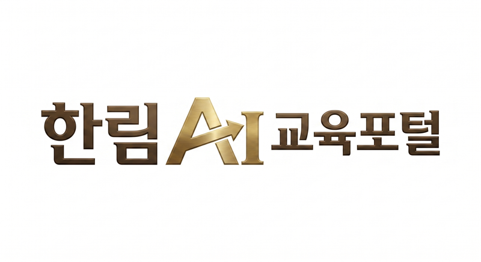
AI 서비스 통합 포털
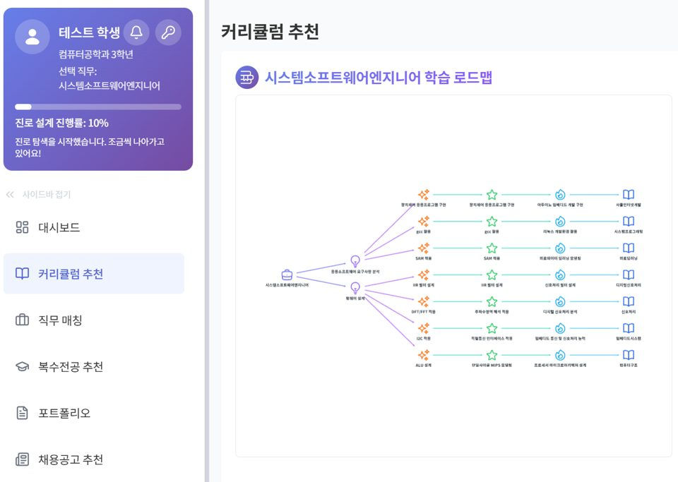
AI 진로 설계 플랫폼
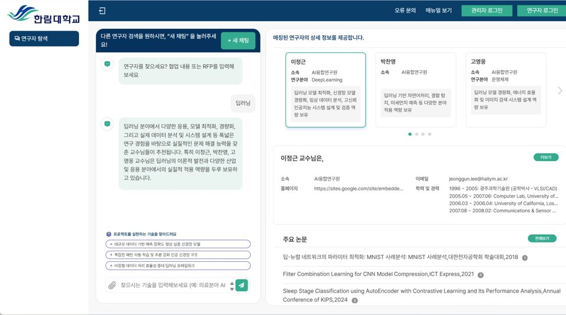
AI 연구자 매칭
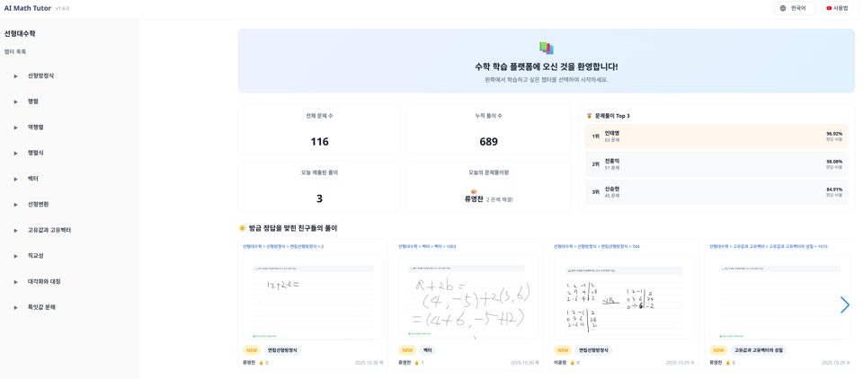
AI 수학 튜터
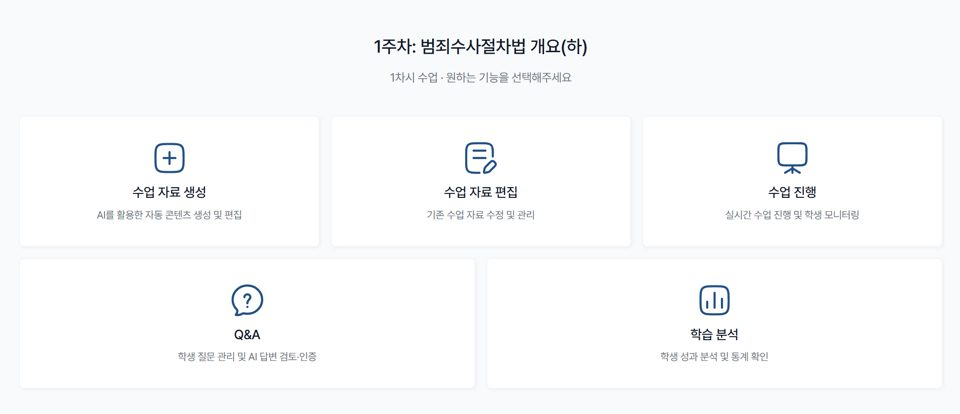
과학수사 AI 코스웨어
AI 한국어 코스웨어
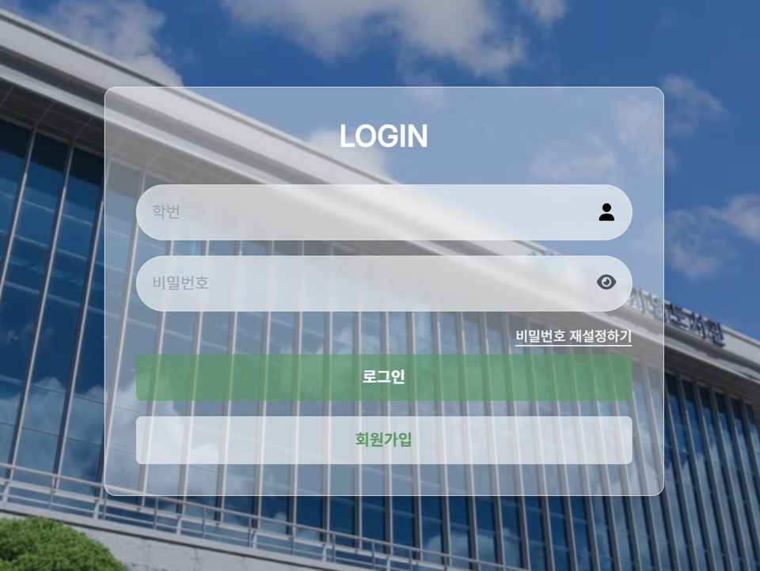
AI 코딩 코스웨어
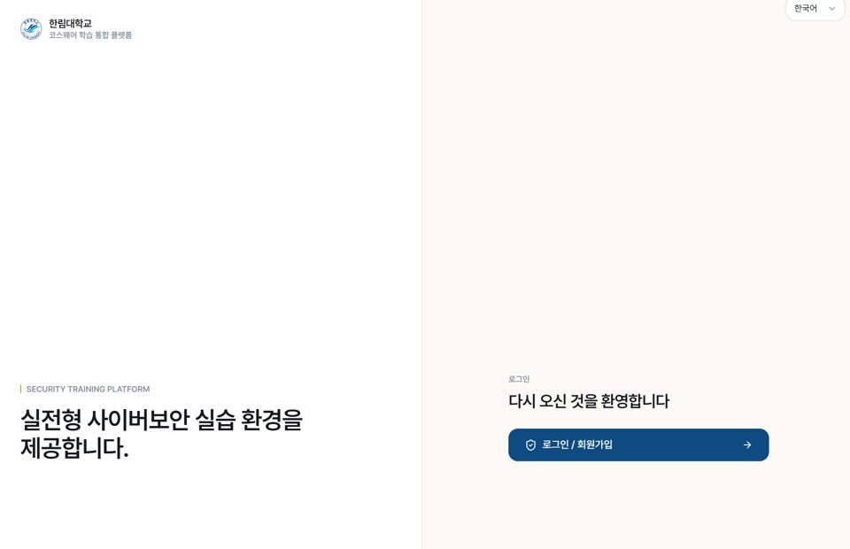
네트워크 보안 코스웨어
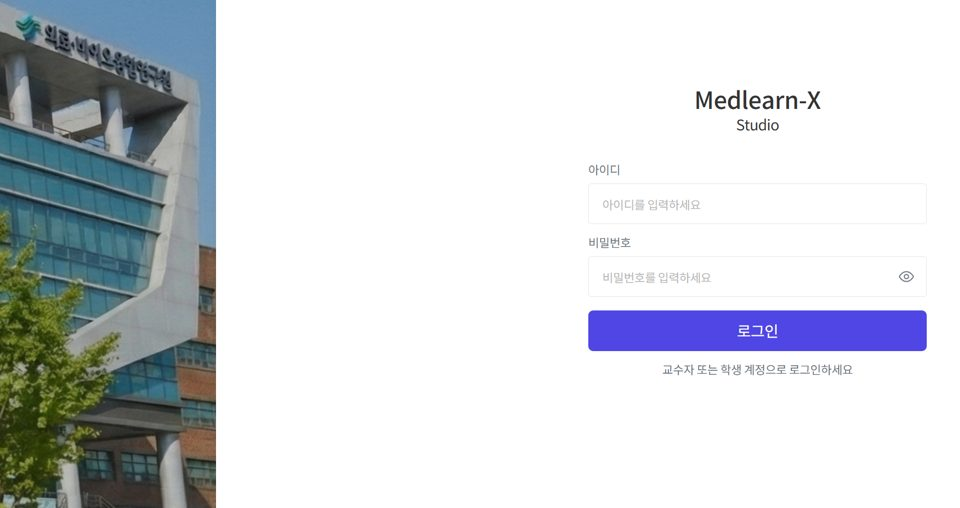
AI 의학교육 플랫폼
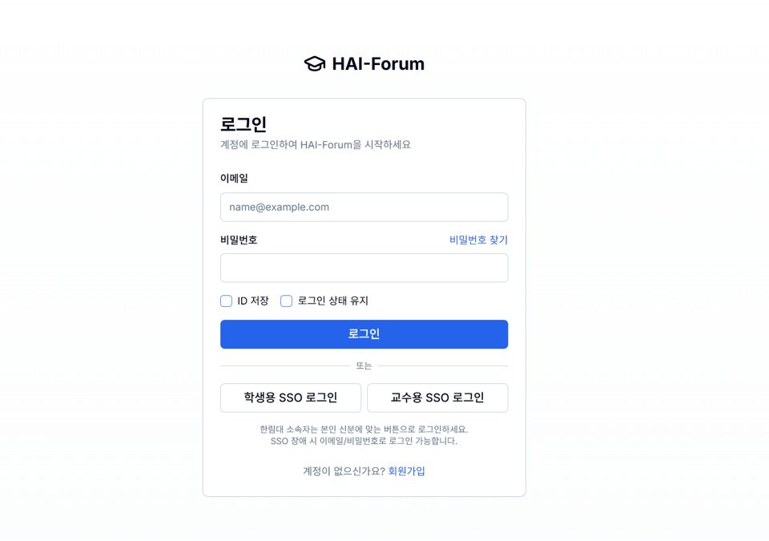
액티브러닝 플랫폼
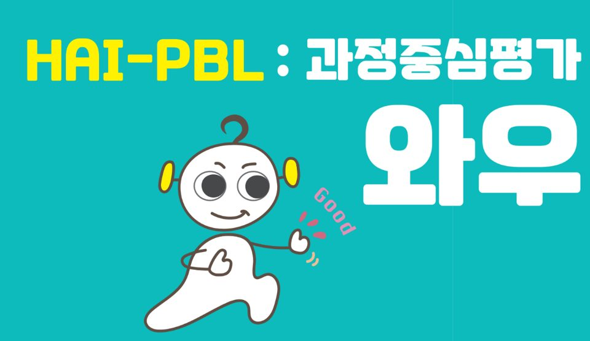
PBL 협업 플랫폼
AI 교수 아바타 강의
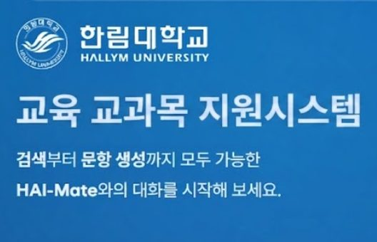
수업 운영 AI 튜터
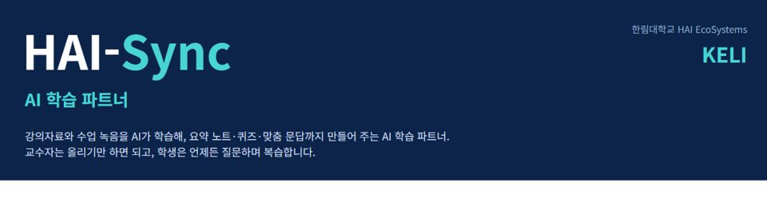
AI 학습 파트너
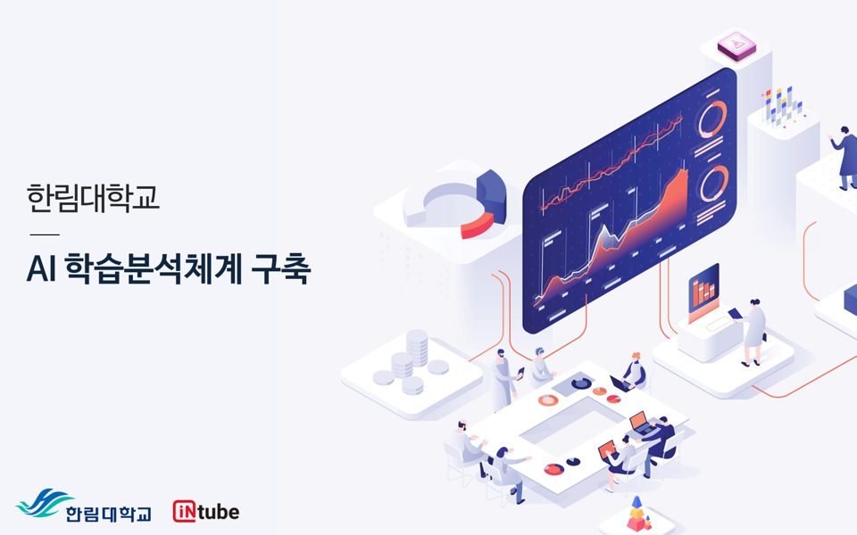
학습데이터 분석 인프라
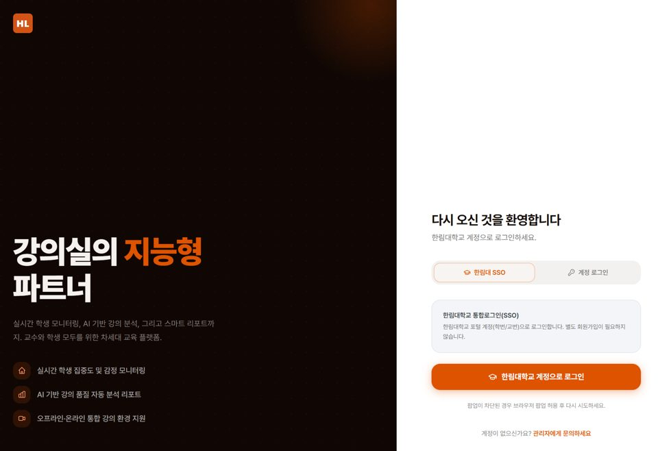
AI 강의 분석 시스템
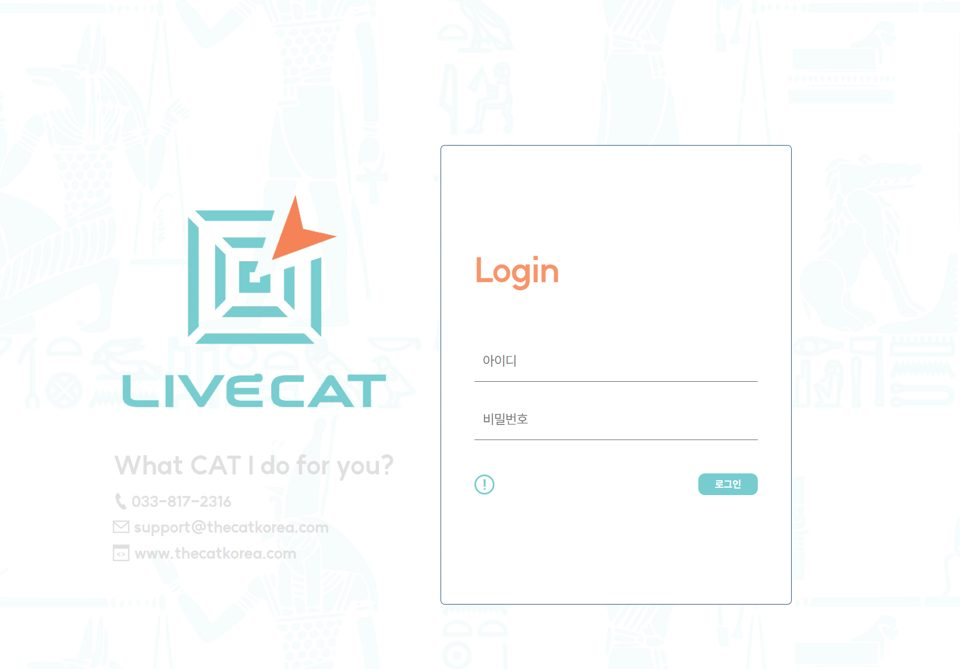
AI 적응형 평가 플랫폼
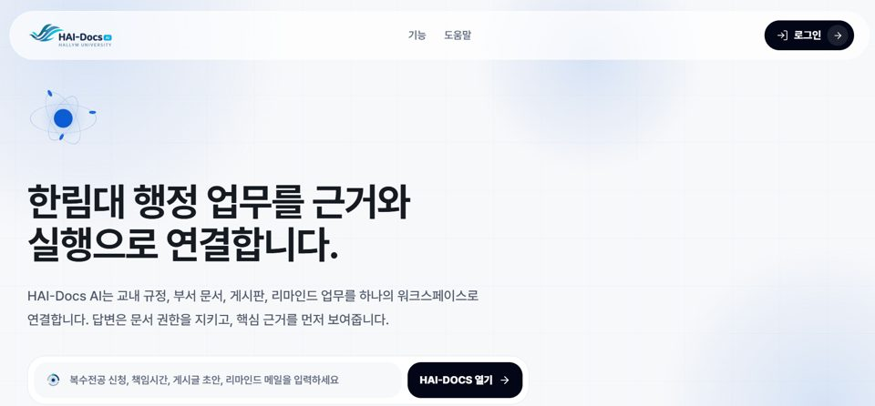
AI 행정 플랫폼
모든 참여는 KELI 사무국을 통해 시작합니다.
첫걸음은 1개 교과목 × 1개 서비스 × 1개 학기.
시범 도입은 무상 또는 협의, 정식 도입은 기관별 협의입니다.
도입 문의 폼 또는 사무국 이메일로 기관명·관심 서비스·적용 교과목을 알려 주세요.
사무국이 무상으로 서비스를 시연하고 적용 방법을 안내합니다.
1개 교과목 × 1개 서비스 × 1개 학기부터 수업 효과를 확인합니다.
교과목·범위·기간을 정해 운영하며 이용 조건은 사무국과 협의합니다.
행사
전체 보기예정된 행사가 등록되면 이 자리에 먼저 보입니다.